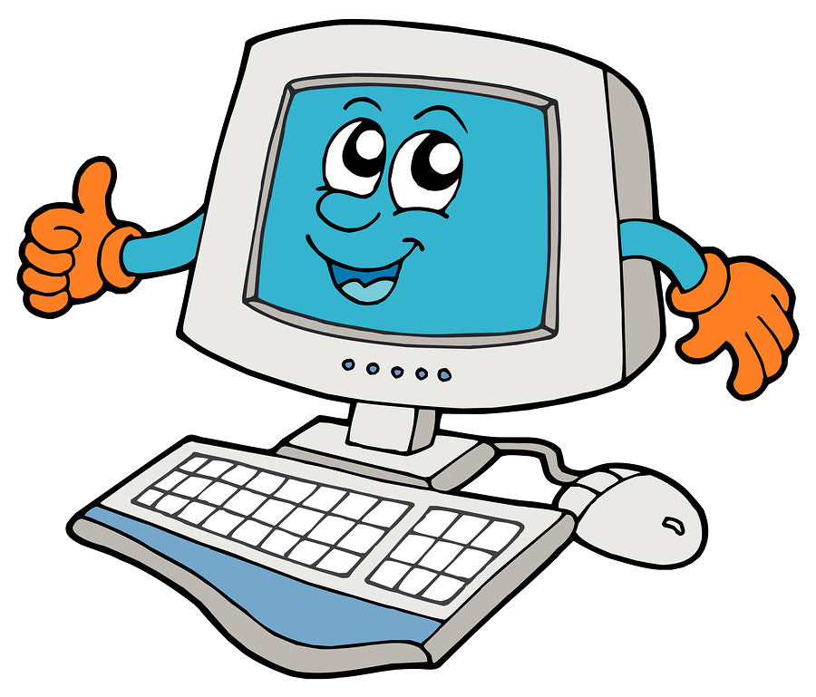

Bilgisayarın Tarihi
Bilgisayarın tarihçesi, bilgiyi hesaplamak, düzenlemek ve değiştirmek için kullanılan yazılım ve donanımların tarihsel gelişiminden bahsetmektedir. Bilgisayar, en basit bakış açısıyla bir matematiksel işlemci, yani bir hesap aracıdır ve veri işler.
Bazı kaynaklarda basit hesap makinesi olan abaküs, ilk bilgisayar olarak tanımlanmaktadır. Bilgisayarın geçmişi yaklaşık 2000 yıl öncesine dayanmaktadır. 1642 yılında Blaise Pascal tarafından yapılan hesap makinesine her ne kadar sayısal dendiyse de bugünkü anlamda sayısal kavramından çok uzaktı.Kaba tuşlarla sayı girişi yapılarak toplama ve çıkarma dışında bir işlem yapılamıyordu.
1671'de Gottfreid Wilhelm von Leibniz tarafından tasarlanan gelişmiş hesap makinesi, ancak 1694 yılında hayata geçirilebilmiş olup, özel dişliler aracılığıyla dört işlemi yapabiliyordu. Ancak Pascal ve Leibniz tarafından yapılan bu aygıtlar yaygın kullanım alanı bulamamışlardır.

Ticari anlamda kullanılabilen ilk mekanik hesap makinesi 1820 yılında Charles Xavier Thomas tarafından yapılmıştır. Charles Babbage ise, uzun araştırmalar ve birkaç denemeden sonra buharla çalışan otomatik hesap makinesini 1823 yılında yapmıştır. Bu alanda ilk büyük gelişme; 1890'da Hermann Hollerith tarafından yapılan ve delikli kart sistemiyle veri girişi yapılan bilgisayar olmuştur. Bu sistemde işlem hızının artması ve hataların azalması büyük bir ilerleme sayılmıştır.

Fatih Selim Yakar
161044054
Diğer sayfaya geçmek için tıklayın!